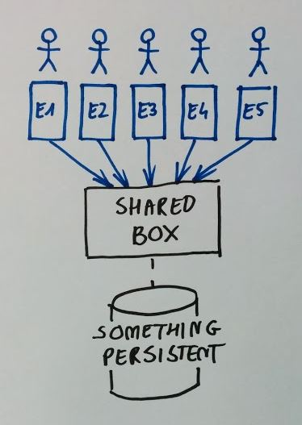
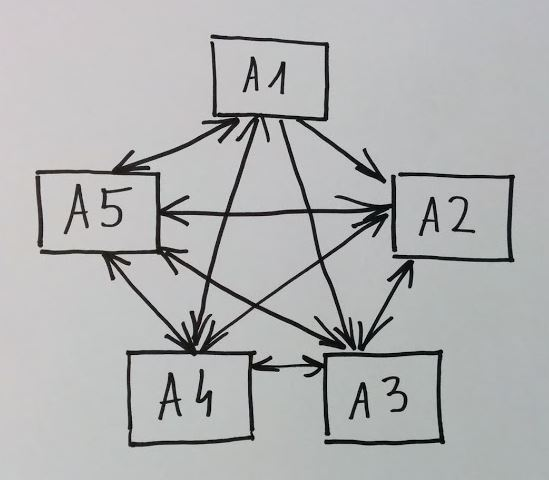
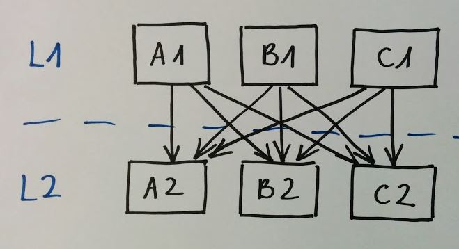
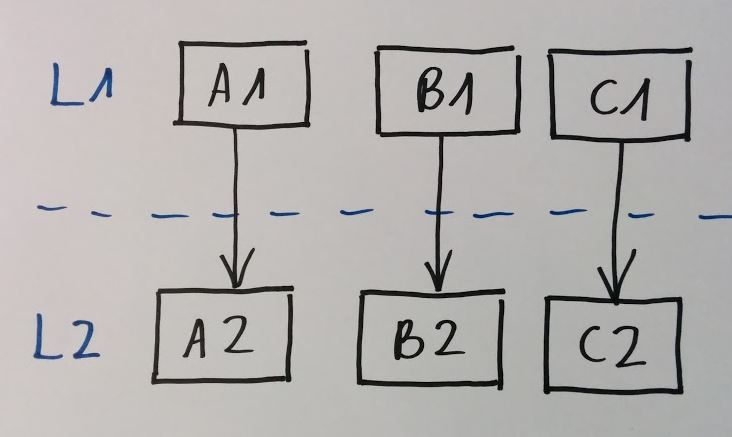
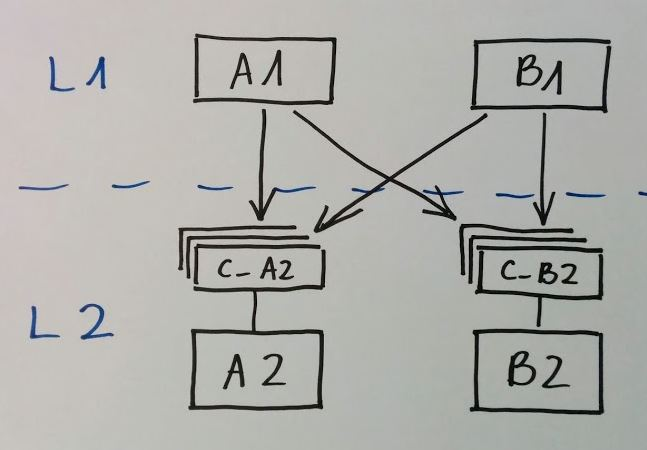
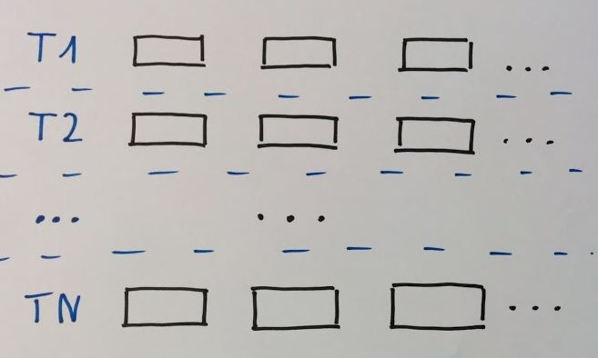
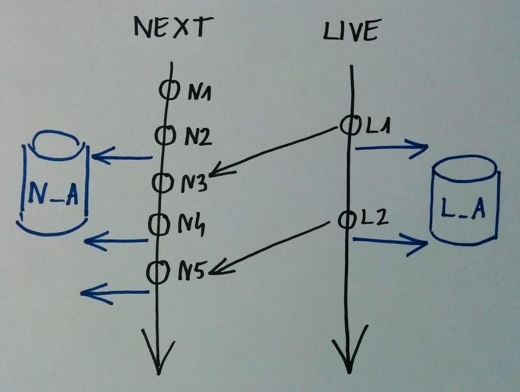
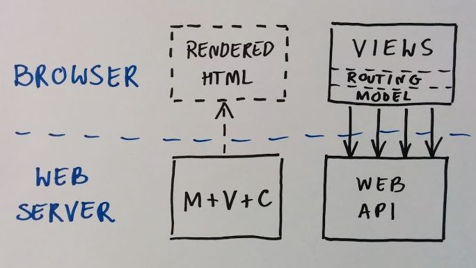
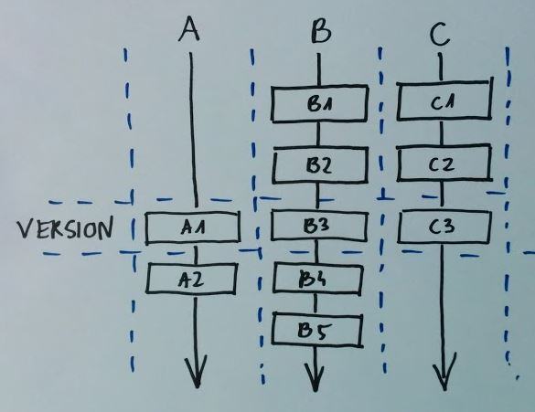
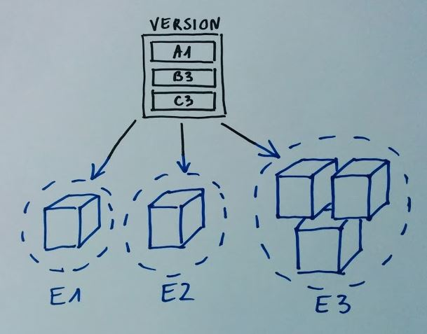

Speaker: Sebastian Gębski @liveweird
| 6 | milestones | |
| 8 | dev teams in "light-side factory" | |
| 18 | months | |
| 171 | SLN files | |
| 983 | used packages in internal repo | |
| 5045 | JS files | |
| 12766 | CS files | |
| 71613 | versions of packages produced | |
| 712143 | package downloads | |
| ~4700000 | lines in CS, JS, HTML & CSS files |
|
 |
|  |  |
|  |
|
  |
|
 |
|
 |
| What exactly is deployed?! | All envs <=> One way |
|  |  |
| Who: | Sebastian Gębski |
| E-mail: | sebastian(at)gebski.net |
| Blog: | http://gebski.tumblr.com |
| Twitter: | @liveweird |